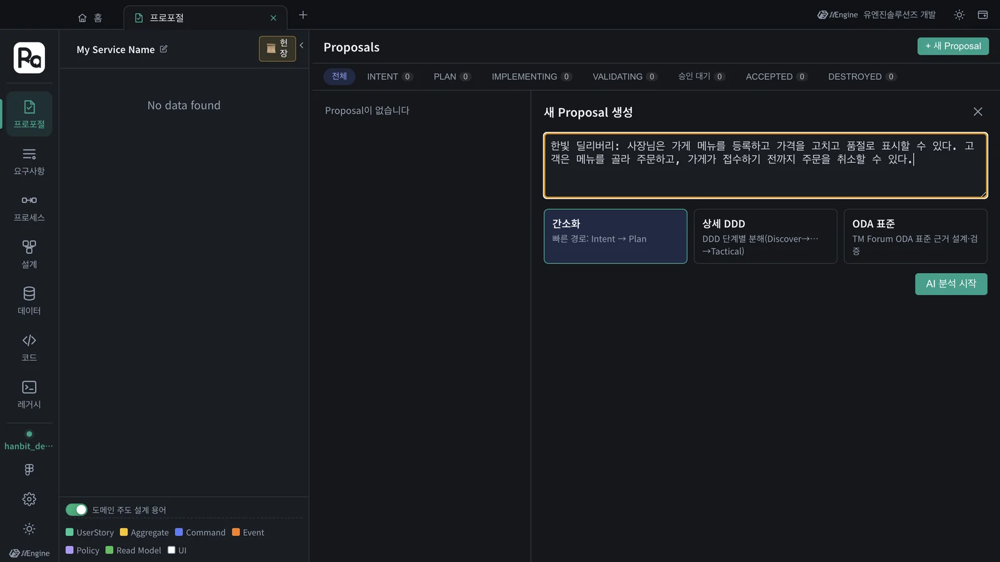
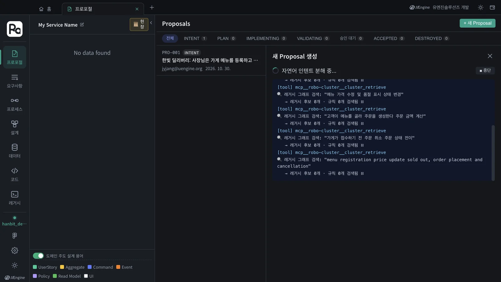
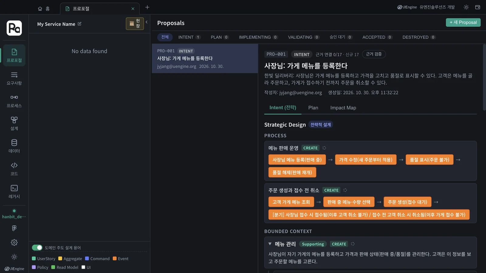
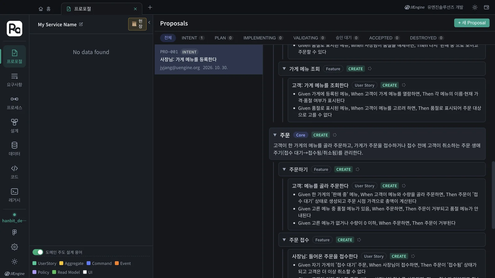
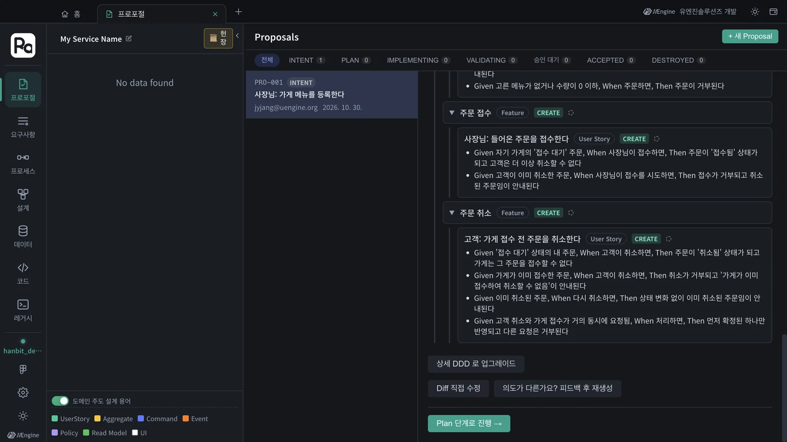
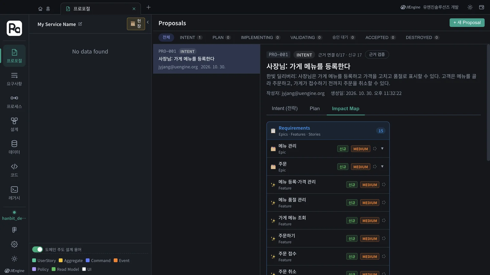

「사장님은 메뉴를 등록하고, 고객은 메뉴를 골라 주문하고 접수 전에는 취소할 수 있다」를 자연어로 써서 첫 프로포절을 만들고, Claude Code가 나눈 전략 설계(프로세스 · 바운디드 컨텍스트 · 기능 · 유저 스토리 · 인수 조건)와 영향도 맵을 읽습니다.
왜 프로포절인가#
Robo Architect에서는 코드를 바로 고치지 않습니다. 바꾸고 싶은 것이 생기면 먼저 프로포절을 만듭니다. 프로포절 하나가 변경 하나이고, 그 안에 「무엇을 왜 바꾸는가」(전략 설계)부터 「어떻게 만들었고 맞게 만들었는가」(구현·검증)까지가 이력으로 남습니다. 그래서 나중에 「이 애그리거트는 왜 생겼지?」를 물으면 그 프로포절을 열어 보면 됩니다.
프로포절의 첫 단계가 INTENT입니다. 요구사항 문장을 도메인 주도 설계(DDD)의 말로 나눕니다.
| 나오는 것 | 뜻 |
|---|---|
| 프로세스 | 업무가 흘러가는 순서. 예: 메뉴 등록 → 가격 수정 → 품절 표시 |
| 바운디드 컨텍스트 | 같은 말이 같은 뜻으로 쓰이는 영역. Core(핵심) · Supporting(지원) · Generic(일반)으로 나눕니다 |
| 기능(Feature) | 컨텍스트 안의 기능 묶음 |
| 유저 스토리 | 「누가 · 무엇을 · 왜」 |
| 인수 조건 | Given(이런 상황에서) · When(이렇게 하면) · Then(이렇게 된다). 나중에 그대로 테스트가 됩니다(7장) |
따라 하기 1 — 프로포절 만들기#
- 홈에서 프로포절 카드를 눌러 프로포절 탭을 엽니다.
- 오른쪽 위 ＋ 새 Proposal을 누릅니다.
- 입력칸에 요구사항을 씁니다.
한빛 딜리버리: 사장님은 가게 메뉴를 등록하고 가격을 고치고 품절로 표시할 수 있다. 고객은 메뉴를 골라 주문하고, 가게가 접수하기 전까지 주문을 취소할 수 있다. - 방식은 간소화(Intent → Plan)를 그대로 둡니다. 「상세 DDD」는 Discover → Decompose → … → Tactical의 DDD 단계를 하나씩 확정하며 가는 길이고, 「ODA 표준」은 TM Forum ODA 표준을 근거로 설계합니다.
- AI 분석 시작을 누릅니다.

분석은 내 컴퓨터의 Claude Code가 robo-proposal-intent 스킬을 따라 합니다. 진행 창에 Claude가 쓰는 도구와 생각이 그대로 흐릅니다. 레거시 그래프 검색(cluster_retrieve)이 「후보 0개」로 끝나는 것은 정상입니다 — 아직 분석한 기존 코드가 없기 때문입니다(13장에서 기존 코드를 분석하면 여기서 근거가 걸립니다).

이 튜토리얼에서는 2분 남짓(132초) 뒤에 「Proposal PRO-001 초안이 생성되었습니다」가 나왔습니다. Proposal 보기를 누릅니다.
AI가 질문을 하면
요구사항이 모호하면 분석 중에 「AI가 몇 가지 사항을 확인하고 싶습니다」와 보기가 나옵니다. 보기를 고르거나 직접 써서 답변 제출을 누르고, 넘어가려면 현재 정보로 계속을 누릅니다.
따라 하기 2 — 전략 설계 읽기#
프로포절 상세의 첫 칸 Intent(전략)이 전략 설계입니다. 제목은 대표 유저 스토리(「사장님: 가게 메뉴를 등록한다」)로 붙고, 상태는 INTENT입니다.

이 튜토리얼에서 나온 것은 이렇습니다. 여러분의 결과는 이름과 개수가 조금 다를 수 있습니다.
| 종류 | 나온 것 |
|---|---|
| 프로세스 | 메뉴 판매 운영 · 주문 생성과 접수 전 취소 |
| 바운디드 컨텍스트 | 주문(Core) · 메뉴 관리(Supporting) |
| 기능 | 메뉴 등록·가격 관리 · 메뉴 품절 관리 · 가게 메뉴 조회 · 주문하기 · 주문 접수 · 주문 취소 |
| 유저 스토리 | 7개 — 사장님 4개(메뉴 등록 · 가격 수정 · 품절 표시 · 주문 접수), 고객 3개(메뉴 조회 · 주문 · 접수 전 취소) |
「주문」이 Core인 이유가 설명에 적혀 있습니다 — 주문의 생애주기(접수 대기 → 접수됨/취소됨)가 이 서비스의 핵심 규칙이기 때문입니다. 아래로 내리면 유저 스토리마다 인수 조건이 붙어 있습니다.

예를 들어 「고객: 가게 접수 전 주문을 취소한다」에는 이런 조건이 붙었습니다.
Given '접수 대기' 상태의 내 주문, When 고객이 취소하면, Then 주문이 '취소됨' 상태가 되고 가게는 그 주문을 접수할 수 없다
Given 가게가 이미 접수한 주문, When 고객이 취소하면, Then 취소가 거부되고 '가게가 이미 접수하여 취소할 수 없음'이 안내된다
Given 이미 취소된 주문, When 다시 취소하면, Then 상태 변화 없이 이미 취소된 주문임이 안내된다
요구사항 문장에는 없던 경계 상황(이미 접수한 주문, 이미 취소한 주문)까지 조건으로 나와 있습니다. 이 조건이 7장에서 구현을 검증하는 테스트가 됩니다.

맨 아래의 단추로 결과를 고칩니다.
| 단추 | 하는 일 |
|---|---|
| 의도가 다른가요? 피드백 후 재생성 | 잘못 나눈 점을 말로 적으면 다시 분해합니다. 예: 「주문 취소는 고객만 할 수 있다」 |
| Diff 직접 수정 | 전략 설계(JSON)를 직접 고칩니다 |
| 상세 DDD 로 업그레이드 | 간소화로 시작한 프로포절을 DDD 단계별 분해로 바꿉니다 |
| Plan 단계로 진행 → | 이 전략 설계로 확정하고 계획 단계로 갑니다(4·5장) |
따라 하기 3 — 영향도 맵#
Impact Map 칸은 이 프로포절이 기존 설계의 무엇을 새로 만들고 무엇을 바꾸는지를 Requirements · Process · Design 단위로 보여 줍니다. 지금은 빈 프로젝트라 모두 신규입니다. 이미 설계가 있는 프로젝트에서 두 번째 프로포절을 만들면 「변경」이 섞여 나옵니다(9장).

확인할 것#
- 프로포절 목록에
PRO-001이 INTENT 상태로 있다. - 전략 설계에 프로세스, 바운디드 컨텍스트(Core 하나 이상), 기능, 유저 스토리, 인수 조건이 있다.
확인 문제#
- 「주문」 컨텍스트가 Core로, 「메뉴 관리」가 Supporting으로 나뉜 까닭은 무엇일까요?
- 분석 중 레거시 그래프 검색이 「후보 0개」로 끝났습니다. 잘못된 것인가요?
- 결과가 생각과 다르면 어떻게 고치나요? 두 가지를 말해 보세요.
정답
- 주문의 생애주기(접수 대기 → 접수됨/취소됨)와 취소 규칙이 한빛 딜리버리의 핵심 업무 규칙이고, 메뉴 관리는 그 주문을 돕는 정보 관리이기 때문입니다.
- 아닙니다. 아직 분석한 기존 코드가 없어서 근거 후보가 없을 뿐입니다.
- 「의도가 다른가요? 피드백 후 재생성」에 말로 고칠 점을 적거나, 「Diff 직접 수정」으로 전략 설계를 직접 고칩니다.